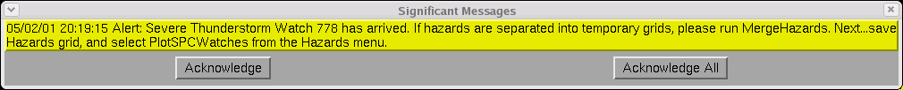
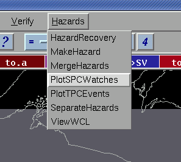
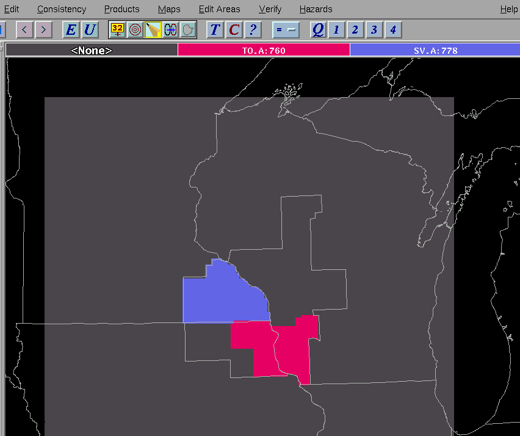

PlotSPCWatches
Procedure for adding SPC Watches into your Hazards Grid
March 9, 2012
Methodology
The PlotSPCWatches procedure is used to automatically take the
official watch outline (WOU) product, decode the counties, watch times,
and watch numbers, and plot this into the Hazards grid. Note: to run
this
procedure, the Hazards grid cannot be separated into temporary grids as
done by SeparateHazards. If it is
separated, use the MergeHazards
tool to recombine the temporary grids.
When a WOU arrives from SPC, it is decoded internally, and a
notification appears on all GFEs.

Next, the forecast will select PlotSPCWatches
from the Hazards
menu.

The tool then plots all active watches into the Hazards grid.

If the latest WOU cancels an existing watch, you will see the watch
removed. If the latest WOU replaces a portion of an existing watch, the
watch will be
overwritten in the grid.
If for some reason a cancellation VTEC code does not arrive for
an
existing watch, you may need to run SeparateHazards,
delete the canceled watch grid, then run MergeHazards
. To create your WCN, save your Hazard grid in GFE, publish it to
official,
the run the Hazard_WCN formatter in Formatter
Launcher.
How
It Works
The PlotSPCWatches procedure analyzes the VTEC
active table and filters records.
- Records currently valid (not ones from the past) from the WOU and
WCN products are separated into those originating from SPC (with action
codes of NEW CON EXT EXA and EXB), and those from non-SPC (all actions
including EXP and CAN).
- Records are then compared. Records are eliminated from the
SPC list that are also in the non-SPC list. Comparisons are based
on the Event Tracking Number, Geographical Zone, Phen and
Sig. After this step, the SPC list should only have records
that contain the NEW watch.
- Records containing EXP and CAN codes are now eliminated from the
non-SPC list.
- The two data sets are combined and then overlapping watches are
eliminated.
- All existing watches are eliminated from the Hazards grid and
then the calculated watches are added to the Hazards grid.
Note: The PlotSPCWatches tool only plots events that are compatible
with the current GFE mode. If the GFE mode is operational, then
only "X", "O", and "E" WOU/WCN events will be considered. If the
GFE mode is "TEST", then only "T" WOU/WCN events will be considered.